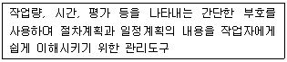
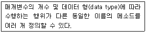
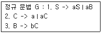
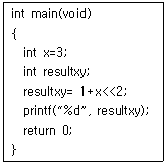
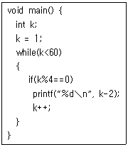

사무자동화산업기사 (2017-03-05 기출문제)
1과목: 사무자동화 시스템
1. 지속적인 개선을 달성하기 위해 기업 내부의 활동과 기능, 관리능력을 외부기업과의 비교를 통해 평가하고 판단하는 것은?
- Benchmarking
- CALS
- EDI
- XML
(정답률: 79%)

2. 소규모 사무실의 네트워크 구축을 위해 직접적으로 필요한 장치가 아닌 것은?
- NIC
- Switch
- Digitizer
- UTP케이블
(정답률: 76%)
3. 기업에서 원 재료를 생산ㆍ유통 등 모든 공급망 단계를 최적화하여 수요자가 원하는 제품을 적시, 적소에 제공하는 개념으로 옳은 것은?
- CRM
- SCM
- ERP
- MIS
(정답률: 51%)
4. 워드프로세서의 매크로에 대한 설명으로 가장 옳지 않은 것은?
- 반복적인 작업을 순서대로 기억시켜 놓고 필요할 때 실행시키는 기능이다.
- 매크로는 별도의 파일로 저장해 두거나 정의된 매크로를 다시 편집할 수 있다.
- 동일한 도형이나 문단 형식, 서식 등에 매크로를 사용할 수 있다.
- 매크로는 키보드의 입력만을 기억할 수 있다.
(정답률: 89%)
5. Windows 시스템 상에서 일본어, 중국어 등 문자수가 많은 언어로 입력하기 위해 필요한 소프트웨어는?
- OLE
- OCX
- IME
- Active X
(정답률: 79%)
6. 인터넷을 전용선처럼 사용할 수 있도록 특수 통신체계와 암호화 기법을 제공하는 서비스로 기업 본사와 지사 또는 지사 간에 전용망을 설치한 것과 같은 효과를 거둘 수 있는 것은?
- Anti-virus
- Firewall
- IDS
- VPN
(정답률: 82%)
7. 다음 중 SRAM에 대한 설명으로 옳지 않은 것은?
- 읽고 쓰기가 가능한 메모리이다.
- SRAM이 DRAM보다 구조가 간단하다.
- SRAM은 refresh 작업이 없기 때문에 DRAM보다 처리속도가 빠르다.
- 전원이 공급되는 한 지속적으로 기록된 자료가 유지된다.
(정답률: 68%)
8. 사무자동화 접근 방법에서 사무자동화의 대상이 되는 모든 시스템, 전 업무, 전 계층에 걸쳐 추진되는 방식은?
- 기기도입형 접근 방식
- 공통 과제형 접근 방식
- 부분 전개 접근 방식
- 전사적 접근 방식
(정답률: 82%)
9. 사무자동화의 목적으로 가장 옳지 않은 것은?
- 사무처리의 비용 절감
- 사무 부문의 생산성 향상
- 사무처리의 질적 향상
- 사무원의 건강증진
(정답률: 89%)
10. 사무실의 물리적 보안을 위한 장치 또는 기술이 아닌 것은?
- 지문인식기
- 안티바이러스
- 폐쇄회로텔레비전
- 디지털 도어록
(정답률: 83%)
11. 순차 접근(Sequential Access)방식의 저장장치로 옳은 것은?
- Flash Memory
- 자기 테이프
- 윈체스터 디스크
- CD-ROM
(정답률: 67%)
12. 광케이블을 특정 지점까지만 연결하고 구내에는 UTP 또는 동축케이블을 연결하는 것과는 달리 광케이블을 구내의 종단까지 직접 연결하여 기존방식 대비 최대 100배 이상 빠른 서비스를 제공할 수 있는 초고속 인터넷 서비스의 명칭은?
- ADSL
- FTTH
- WLAN
- VDSL
(정답률: 53%)
13. 다양한 형태의 데이터베이스 자원을 통합 및 가공하여 의사 결정 지원을 목적으로 특별히 설계한 주제 중심의 정보저장소는?
- 데이터 마이닝
- 데이터 마트
- OLAP
- 데이터웨어하우징
(정답률: 70%)
14. 정지화상, 동영상 등 멀티미디어 처리를 위한 데이터 형식(확장자)이 아닌 것은?
- AVI
- JPG
- MPG
- TXT
(정답률: 89%)
15. 다음 중 전자상거래에 관한 특징이 아닌 것은?
- 생산자는 소자본 창업이 가능하다.
- 근로자는 시공간을 초월하여 업무를 수행할 수 있다.
- 소비자는 상품을 선택할 기회가 적다.
- 운송비가 절감되고 상품 조사가 용이하다.
(정답률: 88%)
16. 데이터베이스의 ACID에 대한 설명으로 가장 옳지 않은 것은?
- A : Atomicity(원자성)의 의미이며 트랜잭션과 관련된 작업들이 부분적으로 실행되다가 중단되지 않는 것을 보장하는 것을 말한다.
- C : Consistency(일관성)의 의미로 트랜잭션 실행을 성공적으로 완료하면 언제나 일관성 있는 DB상태로 유지하는 것을 말한다.
- I : Isolation(고립성)의 의미로 트랜잭션 수행 시 다른 트랜잭션 연산 작업이 중간에 개입되지 못하도록 보장하는 것을 말한다.
- D : Dictation(사전)의 의미로 데이터베이스가 사전의 구조를 가지는 것을 의미한다.
(정답률: 74%)
17. 기억기능을 가진 반도체들을 여러 개 묶어서 HDD처럼 사용할 수 있도록 개발된 제품으로 HDD에 비해 액세스 시간이 빠른 저장장치는?
- ODD
- SATA
- SSD
- SCSI
(정답률: 89%)
18. 데이터에 대한 데이터로 정의되며, 기능적인 측면에서 데이터에 대한 구조화된 데이터로 정의되는 것은?
- 시맨틱 데이터
- 멀티미디어 데이터
- 메타 데이터
- 흐름 데이터
(정답률: 70%)
19. 데이터베이스 모델 중 계층적 데이터베이스의 특징에 해당하는 것은?
- 하나의 부노드(parent node)가 다수 개의 자노드(child node)를 갖는다.
- 데이터 상호간의 유연성이 좋다.
- 테이블을 이용해 데이터 상호 관계를 정의한다.
- 다른 데이터베이스로 변환이 쉽다.
(정답률: 67%)
20. e-mail과 관련된 프로토콜이 아닌 것은?
- POP3
- FTP
- SMTP
- IMAP
(정답률: 69%)
2과목: 사무경영관리 개론
21. 사무계획을 특성에 따라 분류할 때 계획의 순응능력에 따른 분류는?
- 구조계획과 과정계획
- 장기계획과 단기계획
- 고정계획과 신축계획
- 표준계획과 개별설정계획
(정답률: 54%)
22. 계획을 세우고 이를 달성하기 위하여 인간, 기계, 자료, 방법 등을 조정하는 모든 활동은?
- 조직
- 관리
- 행동
- 통제
(정답률: 75%)
23. 정보유출 등 침해사고를 방지하기 위한 대책으로 가장 옳지 않은 것은?
- 정보시스템의 악의적인 외부 침입을 1차적으로 차단하기 위한 방화벽을 설치한다.
- 침입탐지시스템 및 침입방지시스템을 이용하여 인바운드(Inbound)패킷을 모니터링하고 의심되는 패킷은 차단한다.
- 무선네트워크의 전파 도달 범위를 조절하여 건물 외부에서 접속이 불가능하도록 한다.
- 비밀정보는 복호화가 불가능하도록 강력한 암호화 알고리즘을 적용하여 암호화 한다.
(정답률: 69%)
24. 사무개선의 목표로 옳지 않은 것은?
- 용이성
- 신속성
- 다양성
- 경제성
(정답률: 73%)
25. 라인조직의 단점으로 가장 옳지 않은 것은?
- 상위자에게 너무 많은 책임이 주어짐
- 조직구성원의 의욕과 창의력이 저하됨
- 독단적인 처사에 의한 폐단을 면하기 어려움
- 책임과 권한의 구분이 명확함
(정답률: 71%)
26. 사무작업의 정확도를 향상시키기 위한 표준으로 작업 단위의 수가 아닌 보통 %로 표시하는 사무표준의 종류는?
- 양 표준
- 질 표준
- 양 및 질 표준
- 정책 표준
(정답률: 71%)
27. 정보통신망에서 개인정보의 안전성 확보에 필요한 기술적 조치에 해당하지 않는 것은?
- 개인정보에 대한 접근 권한을 확인하기 위한 식별 및 인증조치
- 권한 없는 접근을 차단하기 위한 암호화
- 접속 기록의 위조 및 변조 방지를 위한 조치
- 개인정보 관리자의 의무와 책임을 규정한 내부 지침 수립
(정답률: 81%)
28. 국가기관 또는 지방자치단체의 장이 전자문서 처리를 위해 고시하여야 할 사항이 아닌 것은?
- 전자문서의 승인 방안
- 전자문서로 처리하는 대상 업무
- 전자문서중계설비를 관리하는 자
- 전자문서의 보관기간
(정답률: 43%)
29. 다음 사무처리 방식에 대한 설명으로 가장 옳은 것은?
- 개별처리방식은 다수의 사무원이 자료수집에서 작성까지의 모든 사무처리를 하는 방식이다.
- 로트처리방식은 여럿이 분담하여 사무처리를 하는 방식으로 각 사무원이 각자 맡은 사무를 처리한다.
- 유동작업 방식은 임의로 사무기계 및 사무원을 배치하여 사무처리를 행하는 방식이다.
- 자동화 방식은 컴퓨터 및 사무기기를 사용하여 사무를 수동적으로 처리하는 방식이다.
(정답률: 66%)
30. 사무를 위한 작업의 구성요소에 해당되지 않는 것은?
- 계산
- 분류정리
- 정보예측
- 기록 또는 면담
(정답률: 69%)
31. 듀이의 십진 분류법에서 “문학”이 의미하는 세자리 코드는?
- 100
- 300
- 800
- 900
(정답률: 63%)
32. 문서의 결재에 관한 설명으로 가장 옳지 않은 것은?
- 결재권자의 서명란에는 서명날짜를 함께 표시한다.
- 위임전결하는 경우에는 전결하는 사람의 서명란에 “전결”표시를 한 후 서명하여야 한다.
- 대결하는 경우에는 대결하는 사람의 서명란에 “대결”표시를 하고 서명하여야 한다.
- 위임전결사항을 대결하는 경우에는 전결하는 사람의 서명란에 “대결”표시를 하고 서명하여야 한다.
(정답률: 82%)
33. 다음 내용이 설명하는 사무통제를 위한 관리도구로 맞는 것은?

- 절차도표
- 간트 차트
- PERT
- 티클러 시스템
(정답률: 57%)
34. “경영체는 인체요, 사무는 신경계통”이라고 주장한 학자의 이름은?
- 래핑웰
- 달링톤
- 로빈슨
- 피터슨
(정답률: 71%)
35. 다음 중 사무관리의 기능을 가장 옳게 정의한 것은?
- 조직의 효율성 제고를 위해 장래를 예측하는 기능
- 경영내부의 여러 기능과 활동을 효과적으로 달성하기 위한 조정, 지휘, 통제에 관한 기능
- 사무와 생산에 관련된 기능을 모아 통합처리하는 기능
- 인적자원관리에 관한 업무를 주로 담당하는 기능
(정답률: 70%)
36. 경영정보시스템의 기능에 대한 설명으로 가장 옳지 않은 것은?
- 컴퓨터를 이용한 사무업무의 신속한 처리를 위한 시스템이다.
- 프로그램이 가능한 정형적인 의사결정을 하는 시스템이다.
- PC, 팩스, 워드, 통신장치 등을 이용하여 의사소통을 담당하는 시스템이다.
- 컴퓨터 등의 정보기술 뿐만 아니라 인적자원도 포함하는 인간-기계 시스템이다.
(정답률: 57%)
37. 사무실 내 조명을 위한 방법 중 그 성격이 다른 하나는?
- 직접조명
- 간접조명
- 반간접조명
- 자연조명
(정답률: 84%)
38. 다음 중 사무 간소화의 목적이라고 볼 수 없는 것은?
- 사무업무에 오류가 없도록 처리하기 위해서
- 사무업무의 인력을 감소시키기 위해서
- 사무작업을 현재보다 쉽게 처리하기 위해서
- 사무업무를 신속하게 처리하기 위해서
(정답률: 77%)
39. 문서보존의 일반 원칙과 가장 관계없는 것은?
- 보존할 문서는 가능한 한 줄인다.
- 규정에 따라 보존 문서의 정리 및 폐기를 주기적으로 수행한다.
- 문서보존규정을 제정하고 이를 준수한다.
- 훼손되어 활용이 불가능한 문서도 영구보존해야 한다.
(정답률: 88%)
40. 자료의 기억 용량에 관한 단위가 가장 큰 것은?
- KB
- MB
- GB
- TB
(정답률: 89%)
3과목: 프로그래밍 일반
41. 세그먼테이션의 설명으로 틀린 것은?
- 프로그래머가 메모리를 세그먼트들의 조합으로 볼 수 있게 해 준다.
- 세그먼테이션은 내부, 외부 단편화가 있다.
- 세그먼테이션은 동적으로 결정되는 서로 다른 크기의 세그먼트들로 구성된다.
- 세그먼테이션에 대한 메모리 참조는 (세그먼트번호, 오프셋) 주소 형식으로 이루어진다.
(정답률: 49%)
42. 촘스키가 분류한 문법 중 프로그래밍 언어에서 구문을 분석하는데 사용하는 것은?
- Type 0
- Type 1
- Type 2
- Type 3
(정답률: 50%)
43. 원시 프로그램을 컴파일러가 수행되고 있는 컴퓨터의 기계어로 변역하는 것이 아니라, 다른 기종에 맞는 기계어로 변역하는 것은?
- Cross Compiler
- Preprocessor
- Linker
- Debugger
(정답률: 84%)
44. 다음은 무엇에 대한 설명인가?

- Identity
- information hiding
- polymorphism
- Object
(정답률: 57%)
45. 페이지 교체 알고리즘 중 현 시점에서 가장 오랫동안 사용하지 않은 페이지를 교체하는 기법은?
- SCR
- FIFO
- LFU
- LRU
(정답률: 78%)
46. “A+B*C-D”을 후위(Postfix) 표기법으로 표현한 것은?
- A B C * D - +
- A B + C * D -
- A B C + * D -
- A B C * + D -
(정답률: 61%)
47. Java에서 하위클래스에서 상위클래스를 참조하기 위해 사용하는 명령어는?
- extends
- static
- super
- method
(정답률: 72%)
48. 하나의 자료객체에 동시에 서로 다른 두 이름이 바인딩되어 있는 것은?
- 부작용(side effect)
- 현수참조(dangling reference)
- 별명(alias)
- 가비지(garbage)
(정답률: 68%)
49. 정적 바인딩이 발생하는 시간이 아닌 것은?
- 프로그램 호출시간
- 번역 시간
- 링크 시간
- 언어 정의 시간
(정답률: 58%)
50. 상향식 파싱 기법에 해당하지 않는 것은?
- 파스 트리의 리프, 즉 입력 스트링으로부터 위쪽으로 파스 트리를 만들어 가는 방식
- Shift Reduce 파싱이라고도 함
- 입력 문자열에 대해 루트에서 왼쪽 우선순으로 트리의 노드를 만들어 감
- 주어진 스트링의 시작이 심볼로 축약될 수 있으면 올바른 문장이고, 그렇지 않으면 틀린 문장으로 간주하는 방법
(정답률: 53%)
51. C언어에서 정수가 2byte로 표현되고, “int a[2][3]”로 선언된 배열의 첫 번째 자료가 1000번지에 저장되었다. 이때 a[1][1] 원소가 저장된 주소는?
- 1002
- 1004
- 1006
- 1008
(정답률: 45%)
52. 아래의 정규 문법으로 생성되는 문장은?

- aaab
- abc
- abaa
- baba
(정답률: 74%)
53. C언어에서 다음 코드의 결과 값은?

- 2
- 4
- 8
- 16
(정답률: 42%)
54. 어휘분석 과정에서 토큰으로 인식되지 않는 것은?
- 예약어
- 식별자
- 구두점 기호
- 토큰 사이의 공백문자
(정답률: 73%)
55. 로더(Loader)의 기능이 아닌 것은?
- 번역(Compiling)
- 링킹(Linking)
- 할당(Allocation)
- 재배치(Relocation)
(정답률: 76%)
56. HRN스케줄링 방식에 대한 설명으로 틀린 것은?
- 비선점 스케줄링 기법이다.
- SJF기법의 문제점을 보완하기 위한 방식이다.
- 우선순위 결정식은 (대기시간 + 서비스 시간)/ 대기시간이다.
- 긴 작업과 짧은 작업 간의 지나친 불평등을 해소할 수 있다.
(정답률: 60%)
57. 프로그램이 동작하는 동안 변화되는 값을 기억하는 것은?
- 변수
- 상수
- 주석
- 디버거
(정답률: 70%)
58. BNF 표기법 기호 중 “정의된다”를 의미하는 것은?
- ::=
- ∣
- < >
- { }
(정답률: 88%)
59. 세마포어에서 지원하지 않는 연산은?
- initialize
- construct
- decrement
- increment
(정답률: 60%)
60. 다음 C 코드 결과로 나타날 수 있는 값은?

- 0
- 8
- 24
- 30
(정답률: 43%)
4과목: 정보통신 개론
61. 데이터 터미널과 데이터 통신기기의 접속 규격에 해당하는 것은?
- V.21
- V.23
- V.24
- V.26
(정답률: 54%)
62. HDLC 프레임 구조에 포함되지 않는 것은?
- 플래그(Flag) 필드
- 제어(Control) 필드
- 주소(Address) 필드
- 시작(Start) 필드
(정답률: 79%)
63. 위성통신에서 호 접속 요구가 발생할 때만 회선을 할당하는 방식은?
- 고정 할당 방식
- 임의 할당 방식
- 접속 요구 할당 방식
- 주파수 할당 방식
(정답률: 72%)
64. OSI 7계층 모델에서 기계적, 전기적, 절차적 특성을 정의한 계층은?
- 전송 계층
- 데이터링크 계층
- 물리 계층
- 표현 계층
(정답률: 80%)
65. 203.230.7.110/29의 IP 주소 범위에 포함되어 있는 네트워크 및 브로드캐스트 주소는?
- 203.230.7.102 / 203.230.7.111
- 203.230.7.103 / 203.230.7.254
- 203.230.7.104 / 203.230.7.111
- 203.230.7.1⑤ / 203.230.7.254
(정답률: 45%)
66. 다중접속 방식이 아닌 것은?
- FDMA
- TDMA
- CDMA
- XDMA
(정답률: 67%)
67. 변조의 개념을 옳게 설명한 것은?
- 디지털신호를 아날로그 신호로 변환하는 것이다.
- 전송된 신호를 저주파신호성분과 고주파신호 성분으로 합하는 것이다.
- 제3고조파 신호를 변환하는 것이다.
- 전송하고자하는 신호를 주어진 통신 채널에 적합하도록 처리하는 과정이다.
(정답률: 64%)
68. 반송파로 사용되는 정현파의 주파수에 정보를 실어 보내는 디지털 변조방식은?
- FM
- DM
- PSK
- FSK
(정답률: 66%)
69. L2 스위치의 기본 기능이 아닌 것은?
- Address Learning
- Filtering
- Forwarding
- Routing
(정답률: 54%)
70. 이동통신 시스템에서 이동체의 움직임에 따라 수신 주파수의 세기가 변하는 현상은?
- 동일 채널 간섭
- 페이딩 현상
- 열잡음 효과
- 도플러 효과
(정답률: 56%)
71. 8진 PSK에서 반송파간의 위상차는?
- π
- π/2
- π/4
- π/8
(정답률: 61%)
72. 샤논의 이론을 적용하여 채널의 대역폭(W)이 3.1[kHz] 이고, 채널의 출력 S/N 이 100일 경우 채널의 통신용량(C)은 약 몇 bps 인가?
- 20640
- 20740
- 20840
- 20940
(정답률: 40%)
73. IEEE802.6으로 공표된 분산형 예약방식의 프로토콜은?
- FDDI
- DQDB
- QAM
- LAN
(정답률: 61%)
74. 전송 효율을 최대한 높이려고 데이터 블록의 길이를 동적으로 변경시켜 전송하는 ARQ방식은?
- Adaptive ARQ
- Stop-And-Wait ARQ
- Selective ARQ
- Go-back-N ARQ
(정답률: 73%)
75. 라우팅(Routing) 프로토콜이 아닌 것은?
- BGP
- OSPF
- SMTP
- RIP
(정답률: 54%)
76. 각종 사물에 컴퓨터 칩과 통신 기능을 내장하여 인터넷에 연결하는 기술은?
- IoT
- PSDN
- ISDN
- IMT-2000
(정답률: 81%)
77. 광섬유 케이블에서 클래딩(Cladding)의 주역할은?
- 광신호를 전반사
- 광신호를 증폭
- 광신호를 흡수
- 광신호를 전송
(정답률: 75%)
78. TCP/IP 모델에서 인터넷 계층에 해당되는 프로토콜은?
- SMTP
- ICMP
- SNA
- FTP
(정답률: 54%)
79. ATM 셀의 헤더 길이는 몇 [byte] 인가?
- 2
- 5
- 48
- 53
(정답률: 65%)
80. 정보통신시스템의 구성 요소에 해당되는 용어가 잘못 표기된 것은?
- DTE : 데이터 단말장치
- CCU : 공통신호 장치
- DCE : 데이터 회선종단 장치
- MODEM : 신호변환 장치
(정답률: 56%)